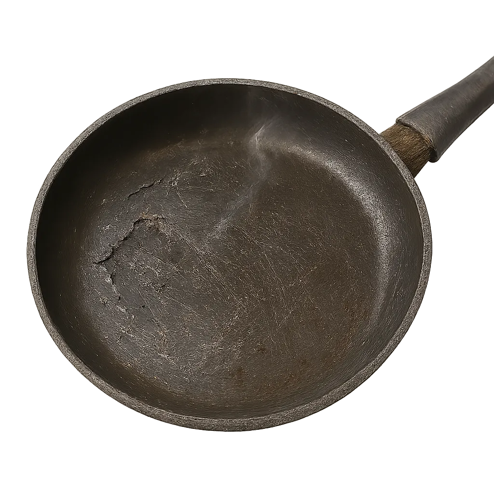
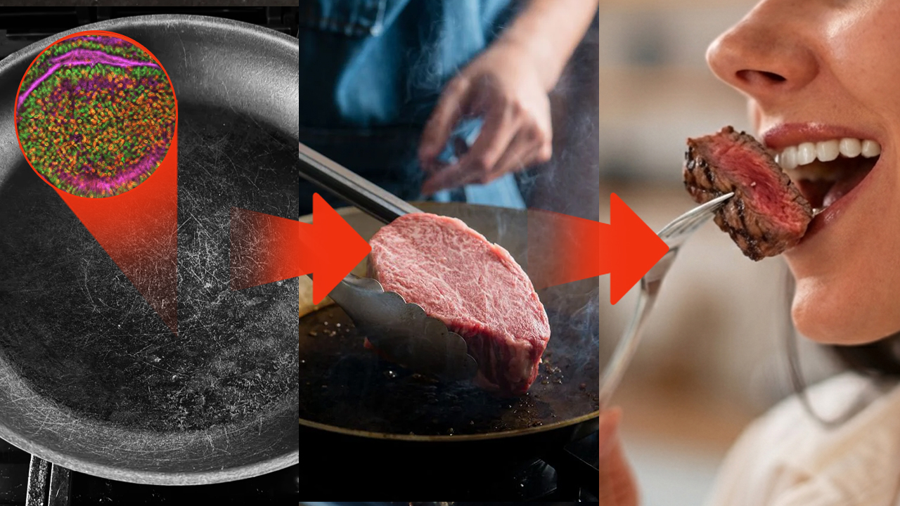
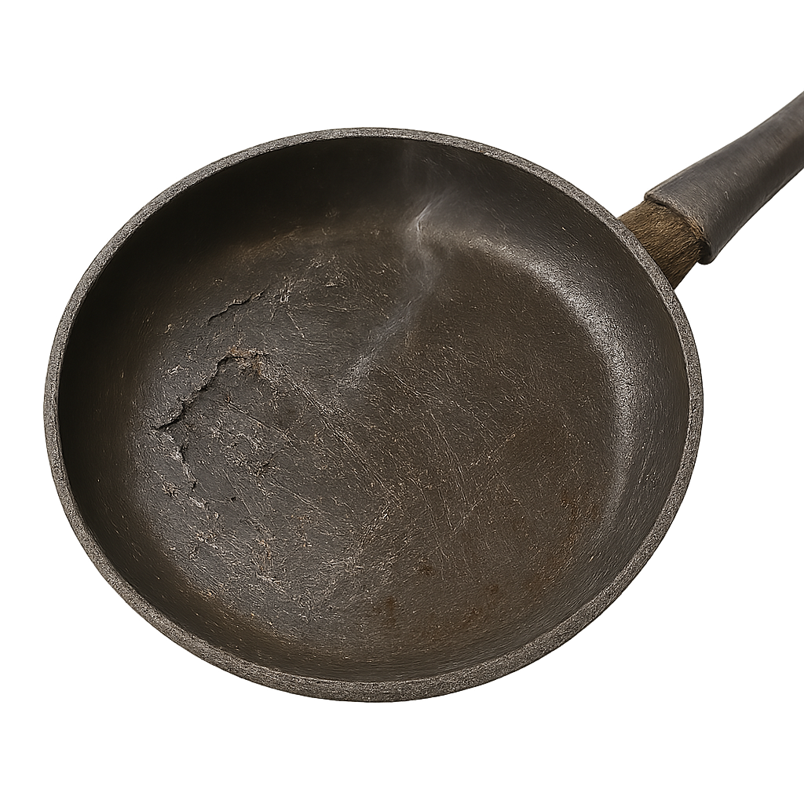
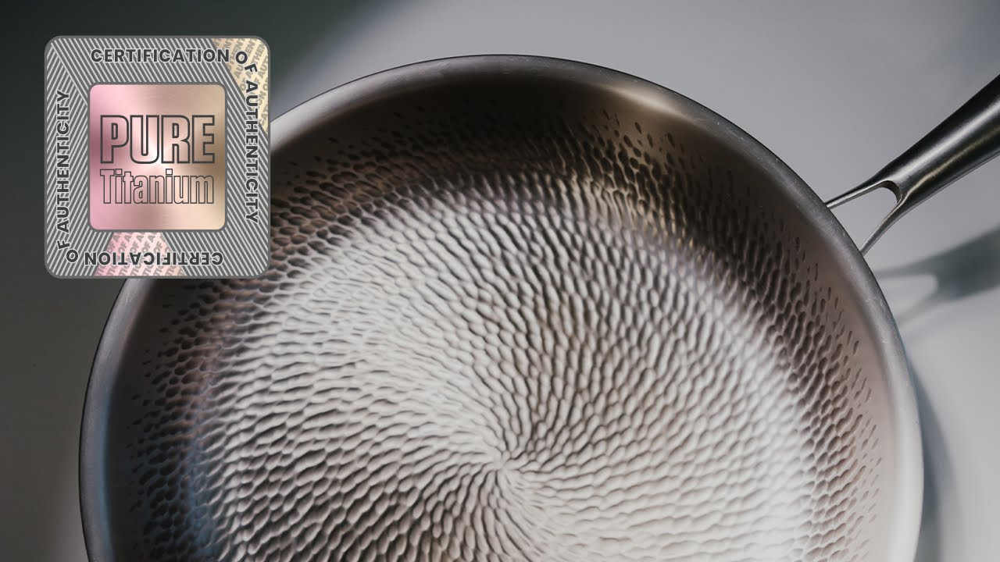
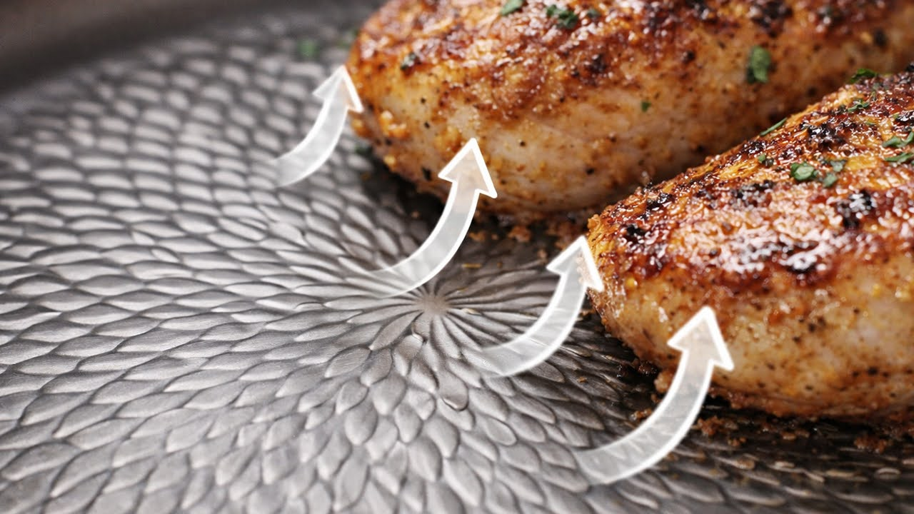
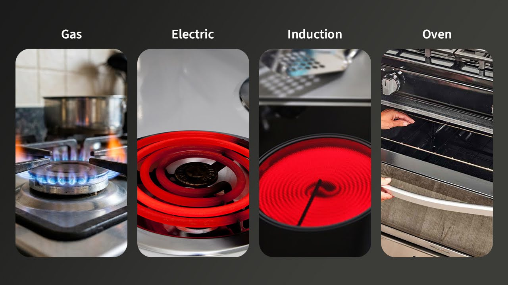
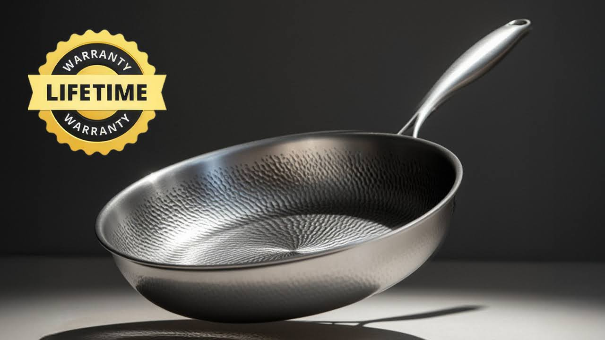
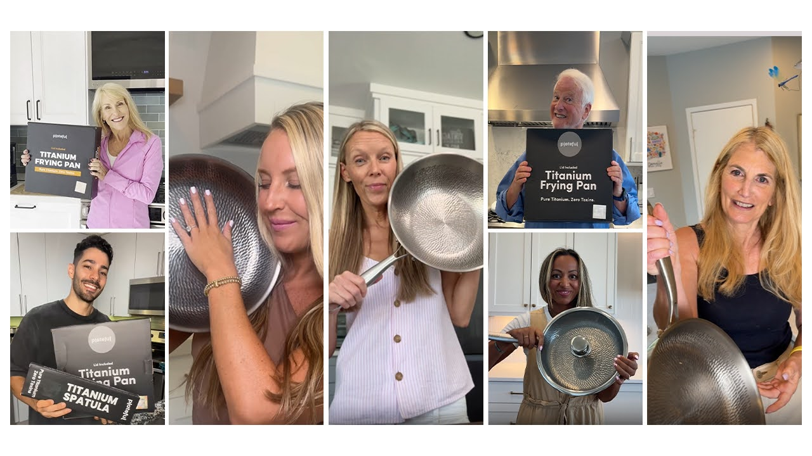

Take This 1-Minute Quiz To Claim a $310 Discount
What’s your age range?
How often do you cook at home?
What do you usually cook?
How Do You Use Your Pan?
Select all that apply
What heat do you usually cook on?
How Long Do You Typically Keep a Pan?
What Type of Cookware Do You Use Most?
Your Non-Stick Pan May Be Releasing Toxins
Non-stick coatings break down with heat and scratches.
As they degrade, highly toxic chemicals can migrate into food — even when the pan still looks fine.

Who Do You Usually Cook For?
What Leaves the Pan Ends Up in Your Body
Every time you cook, highly toxic materials can transfer from the pan into your food — and then into your body and the bodies of the people you cook for.
These substances don’t disappear. They accumulate over time.

Assessing Your Kitchen Safety...
Analyzing your cooking frequency, heat exposure, cookware lifespan, and usage methods to evaluate your kitchen safety.
Your Cookware Safety Assessment
Material Transfer Risk
HighBased on your answers, your cookware is exposed to frequent heat and long-term use conditions known to cause toxic material transfer into the body.
Materials You're Exposed To:
-

PFAS ("forever chemicals")
-

Heavy metals
-

Reactive metal particles
-

Degraded coating residue

Urgency Level: High
High material transfer means toxic substances can enter your body with everyday cooking. Over time, repeated exposure may increase long-term health risks.
Why Switching Pans Doesn’t Fix the Problem
❌ Non-stick has coatings that break down
❌ Ceramic still uses surface coatings
❌ Cast iron reacts with acidic food
❌ Stainless steel changes under heat
Without a truly inert surface, exposure continues.
Your Recommended Cookware Solution
Based on your cooking habits, heat exposure, and how you use your pan, the safest long-term option is cookware made from pure, uncoated titanium.
Titanium is designed to remain inert and eliminate toxic material transfer.
Meet the Plateful Titanium Pro Pan™
- Protects Your Family from Toxins
- Indestructible Medical-Grade Titanium
- Naturally Non-Stick Without Coatings
- Heats Rapidly and Evenly
- Trusted by Families Across America
Made from Pure, Medical-Grade Titanium
Crafted from SGS-certified, medical-grade titanium with no coatings or chemical layers. A stable, non-reactive surface designed for direct food contact and long-term safety.

Naturally Non-Stick
The micro-dimpled titanium surface reduces direct contact between the food and the pan, helping food release more easily — without relying on chemical non-stick coatings.

Cook Without Limits
Built for extreme heat and total versatility. Safe for stovetop and oven use up to 750°F, so you can sear, roast, and finish dishes with complete confidence.

Designed to Last a Lifetime
With no coating to degrade, peel, or wear away, this pan maintains its performance for decades — built to be used daily and passed down through generations.
Our pan also comes with 90 day money back guarantee and lifetime warranty.

Trusted by 100,000+ Home Cooks
Thousands of verified customers rely on Plateful titanium cookware every day for safer cooking, consistent results, and cookware they never need to replace.
